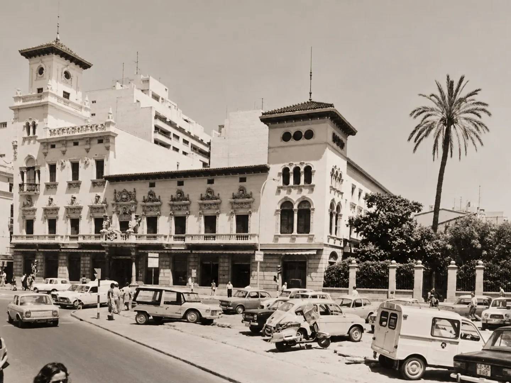
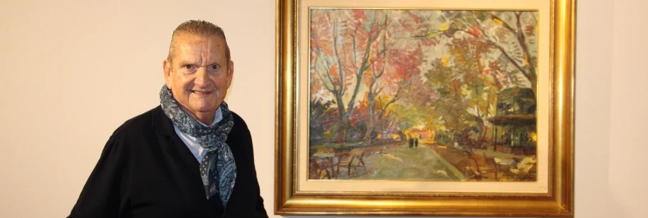
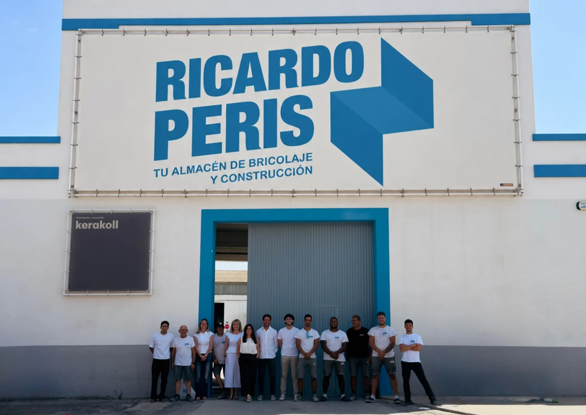

Sobre Ricardo Peris
Cambian los materiales, no el oficio
Nuestra historia es la de una familia de Castellón, los Peris, y la de un oficio: llevar a cada obra el material que necesita. Empezó con el yeso a finales del siglo XIX, siguió con la cal, el cemento y las bovedillas, y hoy continúa en nuestro almacén del Camí Quadra del Borriolenc.
El yeso1902
La casa de la Morería
A finales del siglo XIX, Vicente Peris Igual ya trabajaba por su cuenta: llevaba a las obras de Castellón el yeso del yesar de la Magdalena y el yeso blanco de Quart de les Valls. De sus carros salió parte del que se gastó en el Teatro Principal, entonces en construcción, y el de tres maestros de obras de la ciudad. En 1902 estrenó casa, almacén y cuadra para los carros y las caballerías en la calle de la Morería, esquina con Alloza.
En esos años sumó la cal al yeso: primero con almacén y horno en Els Mestrets, en sociedad con sus hermanos Tomás y Joaquín, y luego por su cuenta en la calle Cazuela, sin dejar de vender cal a la fábrica del gas.
El reparto1908
Un carro y una jaca blanca
En 1908 nació Ricardo Peris Blasco, hijo de Vicente Peris Igual y de Rosa Blasco Felip. Su hermano mayor, Vicente Peris Blasco, nacido en 1894, empezó ese mismo año a repartir el mortero en un carro mediano tirado por una jaca blanca, mientras su madre recibía y anotaba los encargos en casa.
Después llegaron los carros de dos caballerías. Subían cada día al yesar de la Magdalena y, cuando cayó la venta de yeso, traían piedra de la pedrera del Abeller para los muros del depósito de aguas potables de la ciudad.
La cal1913
Un huerto por una fábrica
Hacia 1910, la familia ya cocía su propia cal en un horno arrendado del camino del Cementerio, y con ella sirvió a las obras del nuevo instituto. Para levantar una fábrica, Rosa cambió un huerto que había heredado por un solar junto a la carretera de Benicasim. En él construyeron vivienda, cobertizos, cuadra y dos hornos, y en 1913 la familia se instaló allí, con el teléfono número 188.
Cuando la guerra europea dejó los hornos sin carbón de coque, los mantuvieron encendidos con huesos de albaricoque y cáscaras de almendra y, al final, con la carbonilla de antracita que sobraba de los motores de los pozos de riego. Con la demanda de cal hidráulica llegaron una nave, un molino y un camión Ford. En 1921, la casa suministró material para el Casino Antiguo, incluidos los ladrillos de la torre, traídos de la Vall d’Uixó y de l’Alcora.

El cemento1932
La fábrica y el almacén
Vicente Peris Igual murió en 1925 y sus hijos tomaron el relevo: al frente, el mayor, Vicente Peris Blasco, y con él Ricardo y Juan, el pequeño, que se fueron incorporando. Con una moto BSA llegaron a los clientes de Benicarló y Vinaròs, y en 1930 tenían ya almacén en la ronda de la Magdalena, con rocalla en planchas y tuberías además del material de la fábrica.
En la guía comercial de 1932, la fábrica figuraba a nombre de la Viuda de Vicente Peris Igual, es decir, de Rosa Blasco Felip, y era la única entrada del epígrafe «Cemento (fábrica de)». Su anuncio, con el teléfono 188, llevaba una línea que hoy hacemos nuestra: «El material adecuado para toda clase de obras». En 1935, la casa anunciaba además el almacén de la ronda, con «surtido completo de todo lo concerniente a las obras».
La distribución1939
Cuatro almacenes, una sociedad
Poco antes de la guerra, el almacén de la ronda de la Magdalena se unió a los de otros tres almacenistas de la ciudad, y en 1939 los cuatro, entre ellos Ricardo Peris Blasco, formaron una sociedad. Fueron años de cupos, de colas para conseguir material y de camiones movidos por gasógeno. Con la electricidad restringida, la familia llegó a comprar y rehabilitar un salto de agua en el Mijares, que después vendió para invertir en maquinaria.

Las bovedillas1950
Para las obras de la provincia
En 1944, la casa se anunciaba ya a nombre de los hijos de Vicente Peris Igual, como fábrica de cales hidráulicas y cementos naturales. En 1950 llegó de Ponferrada un molino de bolas, pero la producción se fue centrando en las bovedillas, las piezas que aligeran los forjados. Se hacían primero con cemento y arena lavada, y después con cerámica triturada en lugar de la arena, y salían hacia las obras de la capital y de la provincia. El molino se vendió a un fabricante de Benicarló.
En 1959, la casa amplió su distribución a sanitarios y radiadores, y más adelante trajo una máquina alemana para atender los pedidos de bovedillas. En 1963 se retiró Vicente Peris Blasco; Ricardo y Juan siguieron al frente.
El almacén1976
En el Borriolenc
En 1971, Ricardo Peris Blasco se estableció en la avenida de Benicasim, 2, la dirección de la fábrica familiar, frente a Castalia. En 1976, su hijo, Ricardo Peris Barrera, se instaló en el Camí Quadra del Borriolenc, donde seguimos. Hacia 1990 se anunciaba con tres palabras: cementos, fibrocementos, prefabricados.
En 1992 se constituyó Ricardo Peris, S. L., con domicilio en el número 41, y el almacén sumó la ferretería a los materiales de construcción. El teléfono de entonces, el 21 61 00, es el mismo al que nos siguen llamando, ahora con el 964 delante.
Del carro al camión
En 2017 recibimos el Premio Empresa de los XIV Premios Radio Castellón-Cadena SER, y el almacén entró como casilla en El Joc de Castelló, el juego de mesa de los comercios y los lugares de la ciudad. Del carro de yeso al camión de reparto han cambiado las calles y el rótulo; lo demás sigue igual: saber qué necesita cada obra y hacérselo llegar.
Hoy
Camí Quadra del Borriolenc, 41 · Castellón
El almacén
Un lugar al que venir con una idea.
En el Camí Quadra del Borriolenc, 41, reunimos materiales para construcción, reforma y mantenimiento. Pero una visita al almacén suele empezar antes de elegir un producto: empieza por entender qué necesitas hacer.
Una referencia, unas medidas, una fotografía o un plano nos ayudan a situar el trabajo. Desde ahí podemos hablar de materiales, cantidades y de cómo encaja cada pieza con las demás.
El criterio
Preguntar primero. Recomendar después.
El soporte, la carga, la humedad o el acabado cambian una solución. Por eso nos interesa saber dónde se va a utilizar un material y con qué tiene que ser compatible.
Buscamos que salgas con una decisión entendida y utilizable. Elegir bien también es saber qué hace falta para preparar la superficie, aplicar el producto y terminar el trabajo.
La obra
El pedido no termina en el mostrador.
La obra tiene su propio ritmo. Preparamos el material y coordinamos la entrega teniendo en cuenta cuándo se necesita y cómo se va a recibir.
Conviene concretar el acceso, el espacio de descarga y las fases del trabajo. Un plazo claro y un pedido bien preparado forman parte de la misma solución.
Dirección
Camí Quadra del Borriolenc, 41
12004 Castellón
Horario
Lunes a viernes
de 7:30 a 18:00
Teléfono